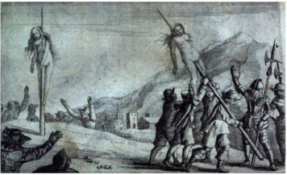

1173 Waldensians - Wealthy merchant Peter Waldo gives away his property and preaches apostolic poverty as the way to perfection. He teaches that: temporal offices and dignities are not meant for preachers of the Gospel; that saints’ relics are simply rotten bones which belonged to one knew not whom; that to go on pilgrimage serves no end, save to empty one's purse; that meat might be eaten any day; that holy water is no more efficacious than rain water; and that prayer in a barn is just as effectual as that offered in a church.
Waldensians are accused of having scoffed at the doctrine of transubstantiation, and of having spoken blasphemously of the Catholic Church as the harlot of the Apocalypse. They reject what they perceive as the idolatry of the Catholic Church and consider the Pope the Antichrist of Rome. They believe in such issues as the universal priesthood, preaching the gospel in the vulgar tongue, and taking up voluntary poverty. The Catholic Church views the Waldensians as heretical, and in 1184 at the Synod of Verona, under the auspices of Pope Lucius III, they are excommunicated. Pope Innocent III goes even further during the Fourth Lateran Council in 1215, officially denouncing the Waldensians as heretics. In 1211 more than 80 Waldensians are burned as heretics at Strasbourg, launching several centuries of persecution that nearly destroy the movement. The group is nearly annihilated in the seventeenth century and is confronted with organized and generalized discrimination in the centuries that followed.
St Augustine taught that error has no rights. He cited biblical texts to justify the use of compulsion, notably Luke 14:16-23. Had not Christ himself blinded St Paul in order to make him see the true light? According to Augustine, coercion using “great violence” was justified. He made a distinction between unbelievers, who persecuted because of cruelty, and Christians, who persecuted because of love. A war to preserve or restore the unity of the Church was a just war, a bellum Deo auctore, a war waged by God himself.

‘Christian love’ for the Waldensians in 1655
from Samuel Moreland History of the Evangelical Churches of the Valleys of Piedmont. 1658
The woman being tortured to death here is Anna, daughter of Giovanni Charboniere of La Torre.